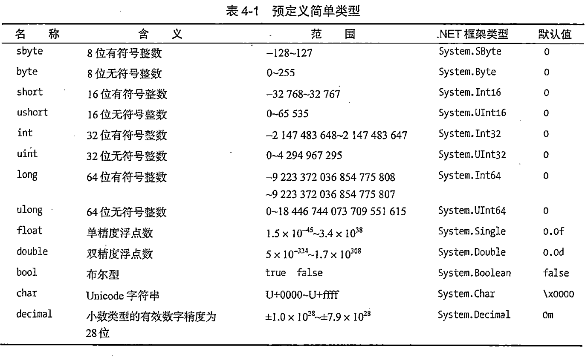

7月06日:第5章类的基本概念
今日作业
- 阅读《C#图解教程》第5章”类的基本概念“。
- 回答以下问题，写在笔记本或简书(www.jianshu.com)上。
1.类是什么
2.构成类的成员有哪些？
3.数据成员是什么
4.函数成员是什么
5.类的数据成员有哪些
6.类的函数成员有哪些
7.程序和类的关系是什么
8.声明类的语法是什么
9.类成员是什么
10.字段是什么
11.声明字段的语法是什么
12.初始化字段语法是什么
13.方法是什么
14.声明方法的语法是什么
15.如何创建类类型变量
16.如何创建类实例
17.类的实例成员是什么
18.访问修饰符是什么
19.私有访问是什么
20.公有访问是什么
参考答案
1.类是什么
- 类是一种数据类型(数据结构、数据存储方式、数据操作方式)。
- 类是一种用户定义的数据类型(不是。
- 类是一种数据结构。
- 类用来组织数据和功能。
- 类用来模拟现实世界事物的特性和功能。 2.构成类的成员有哪些？
类包含数据成员和函数成员。 3.数据成员是什么
- 数据成员定义了类的数据（状态）。
- 函数成员指用于存储类数据或类实例数据的变量。
-
数据成员通常模拟该类所表示的现实世界事物的特性。 4.函数成员是什么
-
函数成员指类中定义的可执行代码块。
- 函数成员定义了类的行为(操作)。
- 函数成员提供对数据的操作。
- 函数成员实现类的功能。
- 函数成员通常会模拟现实世界事物的功能和操作。 5.类的数据成员有哪些
数据成员存储数据
- 字段
- 常量 6.类的函数成员有哪些
- 方法
- 属性
- 构造函数
- 析构函数
- 运算符
- 索引器
- 事件
7.程序和类的关系是什么
8.声明类的语法是什么
- 声明类又叫定义类。
- 声明类就是声明定义类的特征和成员。
- 声明类就是创建实例的模板。
- 声明类需要提供以下内容
- 类的名称
- 类的成员
- 类的特征
示例
9.类成员是什么
- 字段：数据成员
- 方法：函数成员
以上是最重要的类成员类型。
10.字段是什么
- 字段是隶属于类的变量。
- 字段可以是任何类型（无论预定义类型还是用户定义类型）
- 字段用来保存数据（字段可以被读取和写入）
11.声明字段的语法是什么
声明一个字段最简单的语法：
声明多个字段
可以在同一条语句中生命多个相同类型的字段。但不能在一个声明中混合不同的类型。多个字段之间使用逗号分隔。
12.初始化字段语法是什么
字段初始化语法和变量初始化语法相同。字段初始化语句是字段声明的一部分，由一个等号后面跟着一个求值表达式组成。初始化值必须是编译时可确定的。
如果没有初始化语句，字段的值会被编译器设置为默认值，默认值由字段的类型决定。

示例
13.方法是什么
- 方法是具有名称的代码块。
- 方法是类的函数成员。
- 当方法被调用时，它执行自己所包裹的代码。
14.声明方法的语法是什么
声明方法的最简单语法包括以下组成部分：
- 返回类型：声明方法返回值的类型。如果一个方法不返回值，那么返回类型被指定为void
- 方法名称: 命名方法
- 参数列表：至少由一对空的圆括号组成。如果由参数，将被包裹在圆括号内；
- 方法体：由一对花括号组成，花括号内包含执行代码。
示例:声明一个类，带有一个名为PrintNums的简单方法
16.如何创建类实例
一旦声明了类，就可以创建类的实例。
类是引用类型，这意味着他们要为数据引用和实际数据申请内存。
数据的引用保存在一个类类型的变量中。所以，要创建类的实例，需要从声明一个类类型的变量开始。如果变量没有被初始化，它的值是未定义的。
17.类的实例成员是什么
18.访问修饰符是什么
19.私有访问是什么
20.公有访问是什么